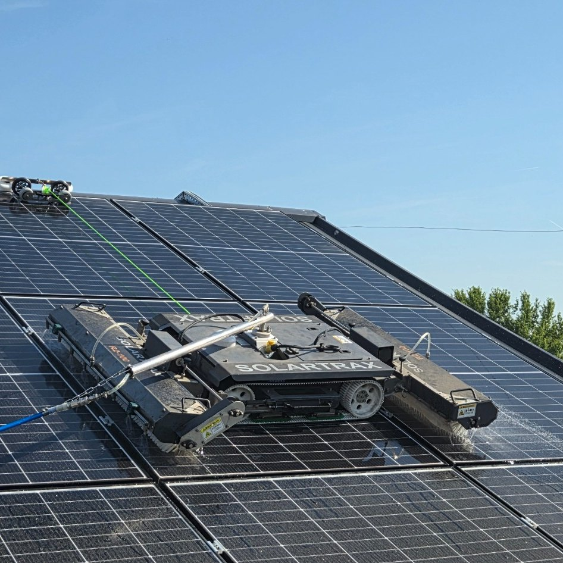
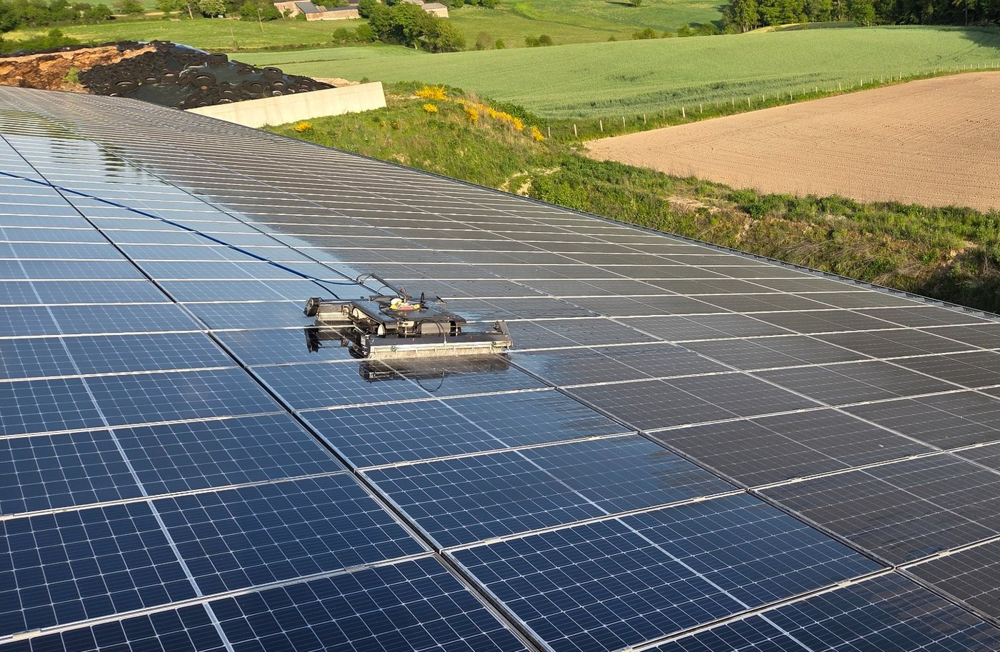
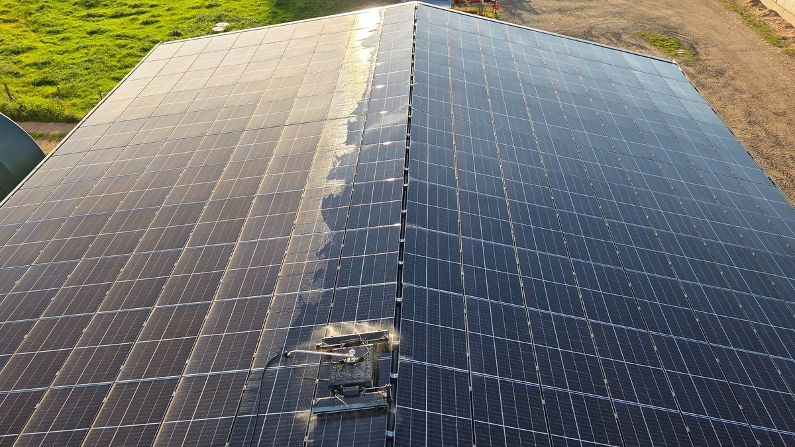
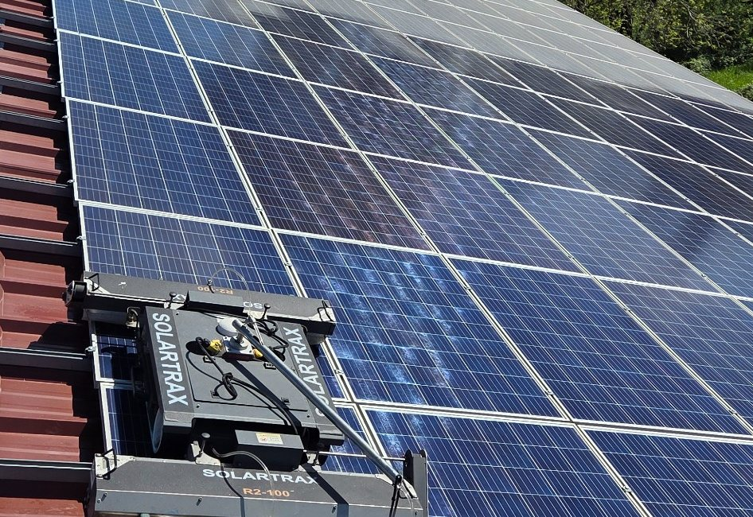

Particuliers
Installations photovoltaïques résidentielles.

Nettoyage photovoltaïque professionnel
Particuliers, exploitations agricoles, entreprises et centrales photovoltaïques.
Nos interventions
Installations photovoltaïques résidentielles.
Hangars et grandes surfaces photovoltaïques.
Sites professionnels et installations de forte puissance.

Un métier que nous connaissons
Nous suivons près de 500 kWc d'installations. Cette expérience nous donne une lecture très concrète des contraintes d'accès, d'entretien et d'exploitation.
Réalisations
Des installations et des contraintes différentes, avec une méthode adaptée à chaque site.


Zone d'intervention
Basés à Sainte-Croix, nous intervenons dans tout l'Aveyron et les secteurs limitrophes. Pour les grandes installations, déplacement plus large sur étude.
Obtenir un devisContact
Commune, puissance approximative et numéro de téléphone suffisent pour démarrer.
06 78 58 03 34 Nettoyage Solaire Aveyron · 188 Seriols · 12260 Sainte-Croix